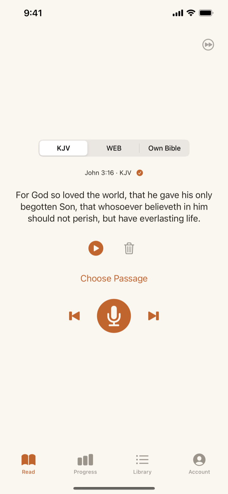
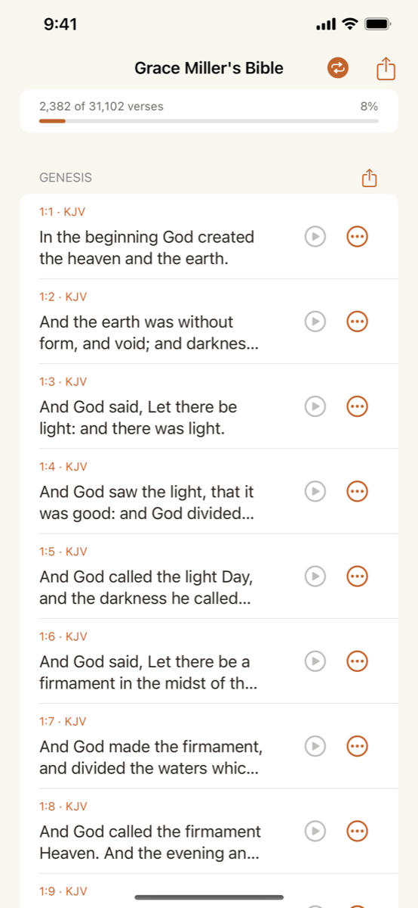
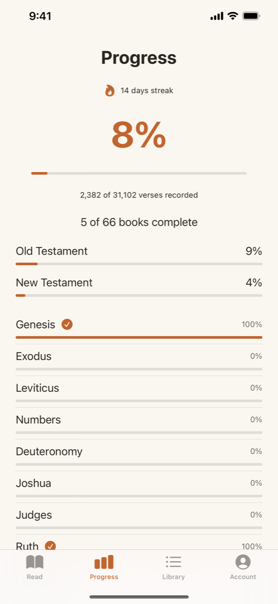

Bible Out Loud
Your Voice, His Word.
Read Scripture aloud, one verse at a time, and build a complete audio Bible in your own voice. Share it with the people you love, and listen to theirs.
Download on the App StoreFor iPhone and iPad. Free to download and to listen.
Read and record
Pick a passage, tap the microphone, and read the verse aloud. Read from the screen in KJV or WEB, or choose Own Bible and follow along in the printed Bible you love.

Build your audio Bible
Every verse you record is saved in your Library. Play it back to back with Auto Play, search by word or verse, and share a verse, chapter, or book.

Watch your progress
Checkmarks, progress bars, and a daily streak show how far you've come through all 66 books.

Share it with family
Invite family and friends to listen to God's Word in a voice they know and love. Your first friend is free; a one-time purchase unlocks sharing with everyone.
Hear theirs
When someone shares their Bible with you, listen anytime, or download it for offline listening. Listening is always free.
Private by default
No accounts or passwords. Your recordings live on your device and in your own iCloud, and only people you invite can listen.